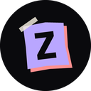
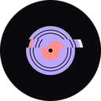

Android
GestosDesliza la portada para cambiar de canción, doble toque para Me gusta, desliza desde el borde izquierdo para la biblioteca
Vibración al tocar
Pausar al quitar los auriculares
Pantalla siempre encendidaMientras ZenTor esté abierto
Barra de arribaDonde salen la hora y las notificaciones Auto Negra Blanca
Icono de la appAlgunos launchers tardan unos segundos en cambiarlo o quitan el acceso directo de la pantalla de inicio
Onda ZR 
Recorte 
Disco Monograma Play Visor
Este PC
Abrir al conectar el USBDeja un pequeño vigilante en este PC que abre ZenTor al enchufar el USB. Se quita al desactivarlo.
Tema
Fondo
Claro u oscuroPara los colores que salen de la portada o la imagen Auto Sistema Oscuro Claro
Colores
LogoLos colores de las letras de ZENTOR Tema Mono Arcoíris Pastel Propio
Brillo según la portadaEl resplandor toma el color del disco
Forma
Esquinas de la portadaLos corchetes de color alrededor del disco
Piezas torcidasEl estilo de recortes inclinados
Texto
Título
Recorte Bloque Gótica Máquina Cartel Rotulador Píxel Terminal Neón Glitch Retro Dulce Sombra Mono Elegante Moderna
Efectos
Líneas de escáner
Glitch al cambiar
Franja de rayas
Mostrar la siguiente
Reproducción
Al abrir
Seguir Aleatoria Primera
Sonar nada más abrirSin tener que darle al play
Fundido cruzadoLa nueva entra mientras la anterior se va
Saltar silenciosQuita el silencio del principio y del final
Ocultar audios cortosNotas de voz, sonidos…
No <30 s <1 min
Temporizador
Apagar en
No 15′ 30′ 60′ Al acabar
Restablecer todos los ajustes